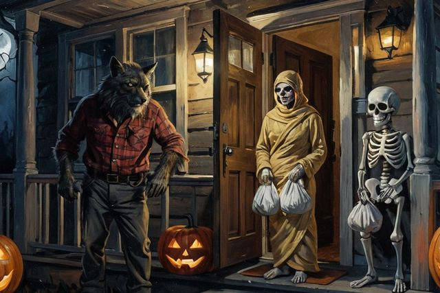

Chapter One · Skills 01–07The Real Trick-or-Treaters
Werewolves, ghosts, a mummy and a witch who wants an apple
- Answering the Door to a Werewolf
- Treats for a Ghost
- The Mummy on the Porch
- Skeletons Who Rattle
- A Witch at the Door
- Tricks Instead of Treats
- Turning Off the Porch Light